Phần 1: Giới thiệu
Giả sử công ty bạn có một ứng dụng thương mại điện tử tên là Storedog. Ứng dụng này được triển khai trên Docker và bao gồm nhiều microservice: store-frontend, store-backend, store-discounts, và store-ads. Gần đây, công ty bắt đầu sử dụng Datadog để giám sát tình trạng hoạt động và hiệu suất của Storedog.
Bạn vừa gia nhập team quản lý dịch vụ store-discounts và muốn bắt tay vào làm việc với dữ liệu ngay. Bài lab thực hành này sẽ giúp bạn làm quen với Datadog thông qua các hoạt động sau:
- Khám phá dashboard từ Dashboard List
- Tìm kiếm và trực quan hoá dữ liệu log trong Logs
- Xem thông tin chi tiết dịch vụ trong Software Catalog
- Đọc hiểu monitor trong Manage Monitors
1.1. Tags trong Datadog
Trong Datadog, mọi dữ liệu từ hệ thống đều được gắn tags. Tags là các cặp key:value đơn giản, cung cấp metadata (thông tin mô tả) về dữ liệu. Bạn có thể dùng tags để tìm kiếm, lọc và nhóm dữ liệu. Datadog tự động liên kết các dữ liệu có cùng tags trên toàn nền tảng. Bạn cũng có thể gán tags cho monitor và các tài sản khác mà bạn tạo trong Datadog.
Hình dưới đây minh hoạ danh sách tags của một metric trong Datadog:
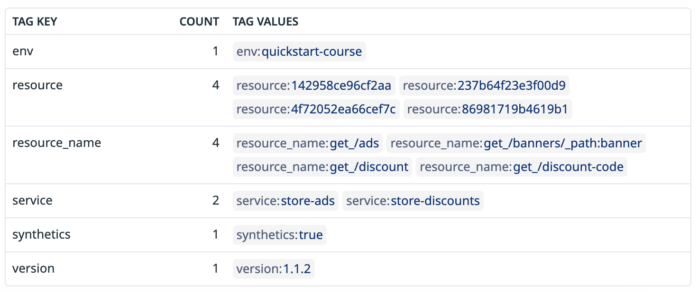
Trong bài lab này, dữ liệu từ Storedog được gắn tag env:quickstart-course (cho biết dữ liệu thuộc môi trường quickstart-course). Dữ liệu riêng của dịch vụ store-discounts còn có thêm tag service:store-discounts. Bạn sẽ sử dụng các tags này khi tìm kiếm dữ liệu và monitor trong bài lab.
Thông tin đăng nhập Datadog tại https://app.datadoghq.com:
Username: ebo44cutuv@ddtraining.datadoghq.com
Password: 4dDe327f+8
API Key: 87ac4b6c3db50ebc95a4ee230fae29bb
Tài khoản hết hạn sau 13 ngày 20 giờ
Đây là tài khoản dùng thử, có hiệu lực trong 14 ngày. Sau khi hết hạn, hệ thống sẽ tự động cấp tài khoản mới để bạn tiếp tục học. Thông tin này chỉ dùng được cho các lab của Datadog Learning Center.
======
Nếu thông tin đăng nhập không hoạt động, hãy nhấn tab Help phía trên terminal để xem hướng dẫn khắc phục.
root@lab-host:~/lab#Phần 2: Đăng nhập vào Datadog
Một tài khoản dùng thử Datadog đã được tạo sẵn cho bạn. Thông tin đăng nhập hiển thị trong terminal bên cạnh hướng dẫn.
Mở tab trình duyệt mới, truy cập https://app.datadoghq.com/account/login và đăng nhập bằng thông tin trong terminal.
Lưu ý: Nếu không thể đăng nhập, nhấn tab Help phía trên terminal để lấy thông tin đăng nhập mới.
Sau khi đăng nhập thành công, tiếp tục với phần Khám phá Dashboard bên dưới.
Lưu ý: Khi duyệt giao diện Datadog, một số trang có thể hiển thị hình ảnh gradient lớn ở trên cùng chứa thông tin tổng quan. Bạn có thể đóng ảnh này bằng nút X ở góc trên bên phải.
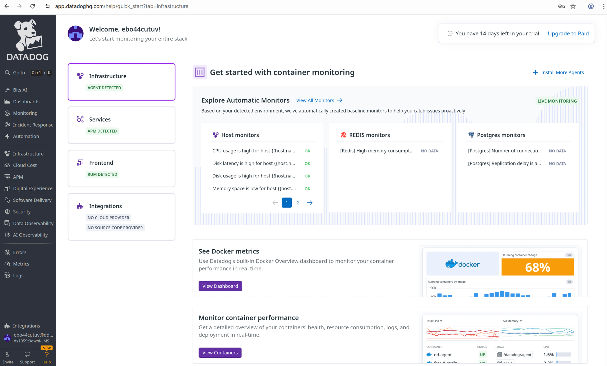
Phần 3: Khám phá Dashboard
Dashboard là nơi tuyệt vời để bắt đầu tìm hiểu dữ liệu. Dashboard cho phép bạn trực quan hoá dữ liệu từ toàn bộ hệ thống tại một nơi duy nhất. Datadog cung cấp hàng trăm dashboard có sẵn (OOTB - Out-Of-The-Box) cho các công nghệ và kịch bản phổ biến. Bạn cũng có thể tạo dashboard tuỳ chỉnh theo nhu cầu của team.
Một đồng nghiệp của bạn đã tạo dashboard tuỳ chỉnh tên là Storedog 2.0, tổng hợp dữ liệu và thông tin từ nhiều nguồn trong Datadog. Bạn sẽ dùng dashboard này để tìm hiểu thêm về dịch vụ store-discounts.
Bước 1: Mở Dashboard List
Trên menu chính, rê chuột vào Dashboards và chọn Dashboard List.
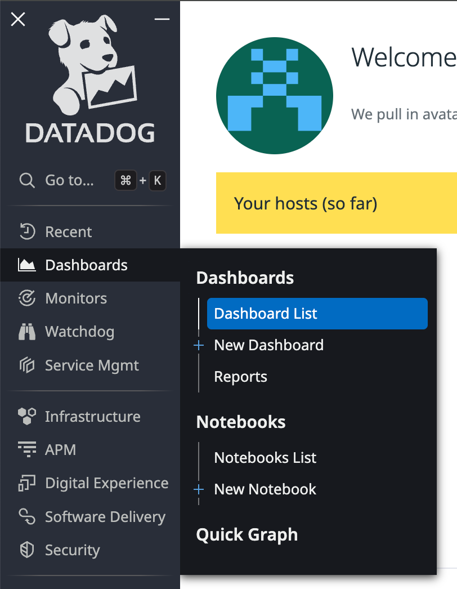
Bước 2: Duyệt danh sách
Duyệt qua danh sách dashboard.
Danh sách bao gồm các dashboard OOTB được Datadog tự động cài đặt dựa trên cấu hình của Storedog. Ngoài ra còn có một dashboard tuỳ chỉnh tên Storedog 2.0 (như hình dưới).
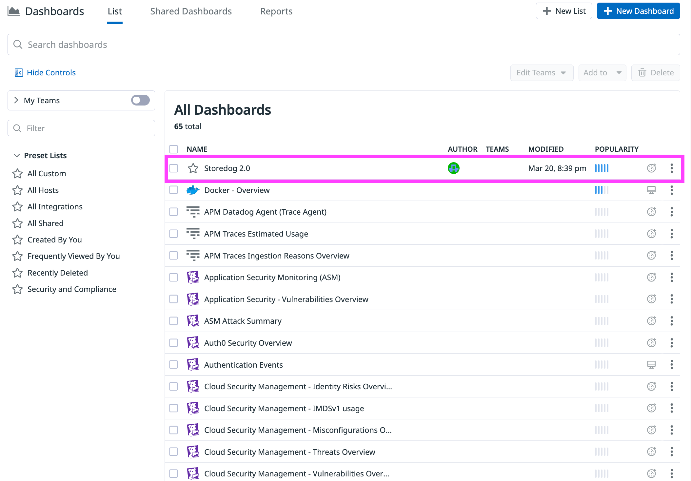
Bước 3: Mở dashboard Storedog 2.0
Nhấn chọn Storedog 2.0 để mở dashboard.
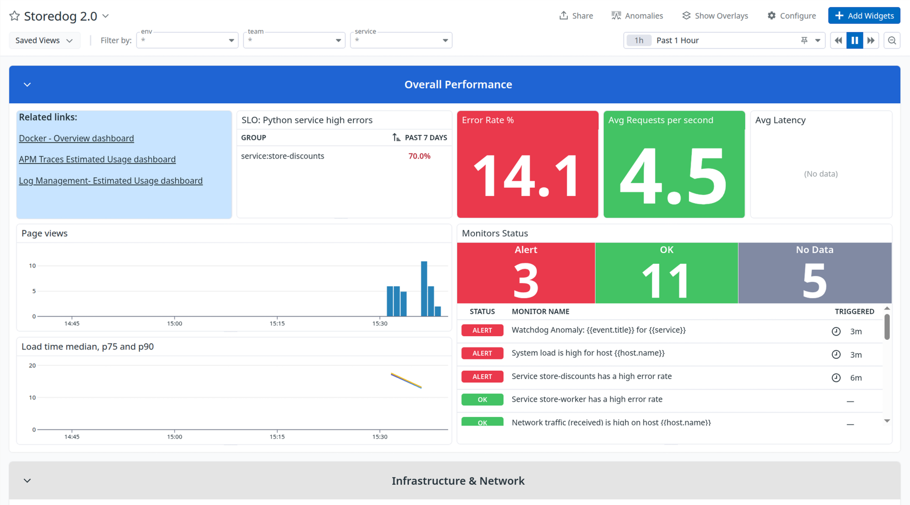
Các khối xây dựng nên dashboard gọi là widget. Dashboard này có 3 nhóm widget: Overall Performance, Infrastructure & Network, và Databases.
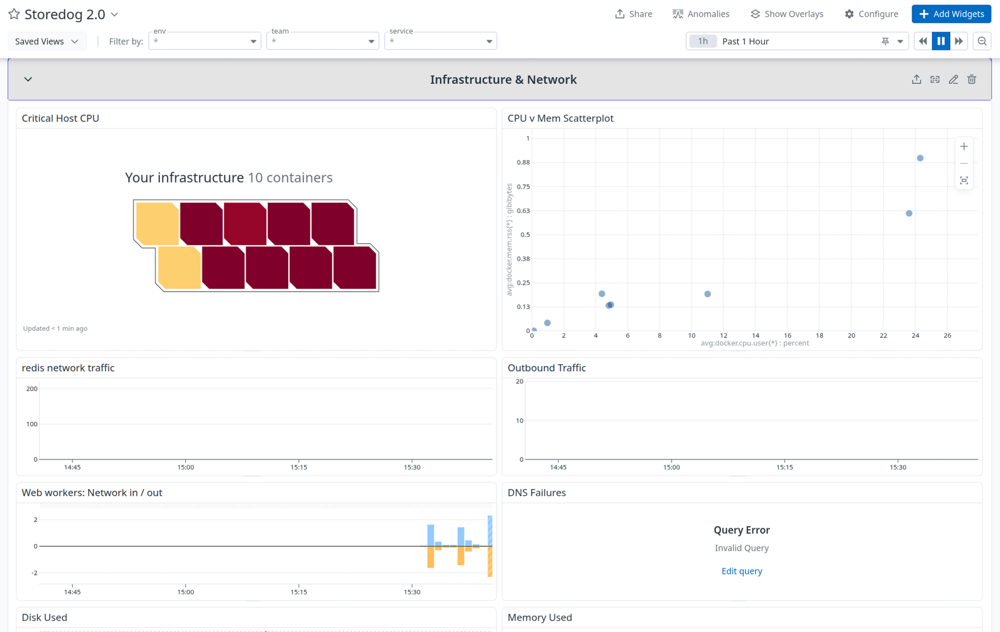
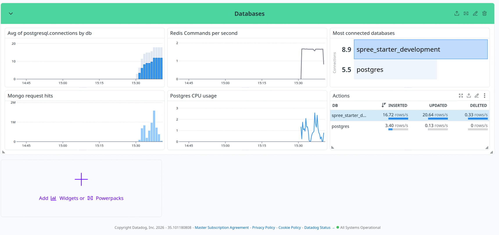
Bước 4: Xem chi tiết widget
Nhấn vào dữ liệu trong bất kỳ widget nào. Một menu sẽ mở ra hiển thị chi tiết về metric cùng các tuỳ chọn điều hướng đến dữ liệu liên quan trong các phần khác của Datadog. Trên toàn bộ Datadog, bạn đều có thể nhấn vào dữ liệu trong biểu đồ để xem dữ liệu liên quan.
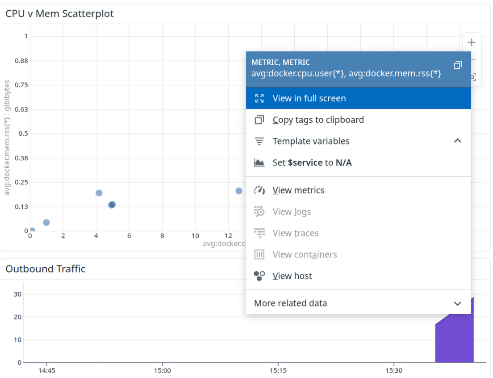
Bước 5: Lọc dữ liệu
Để tập trung vào dữ liệu của dịch vụ store-discounts, cập nhật bộ lọc phía dưới tiêu đề dashboard: nhấn env → chọn quickstart-course, nhấn service → chọn store-discounts.
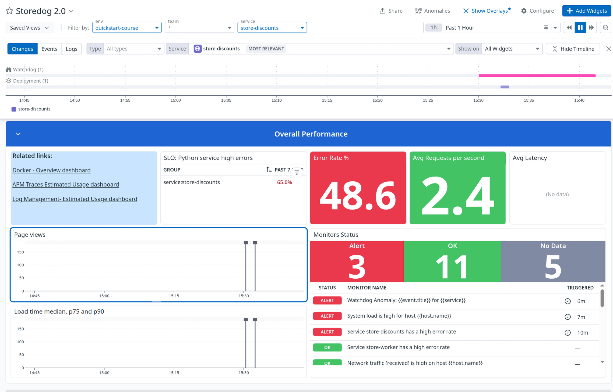
Lúc này, dữ liệu trong các widget SLO: Python service high errors, Monitors Status, và Error Rate % cho thấy dịch vụ store-discounts có tỷ lệ lỗi cao (SLO = Service Level Objective). Bạn quyết định điều tra thêm về các lỗi này.
Bước 6: Thêm vào Favorites
Nhấn biểu tượng ngôi sao ⭐ bên cạnh tiêu đề dashboard để thêm vào danh sách yêu thích – giúp bạn tìm lại nhanh hơn sau này.
Bước 7: Mở liên kết liên quan
Nhóm widget Overall Performance có danh sách Related links (liên kết liên quan). Đây là các dashboard OOTB mà Datadog tự động thêm vào vì team bạn đang sử dụng các dịch vụ/công cụ tương ứng. Đồng nghiệp đã liệt kê các link này để tiện truy cập. Bạn muốn xem dashboard Docker - Overview chứa thông tin gì.
Nhấn vào link Docker - Overview dashboard trong dashboard Storedog 2.0.
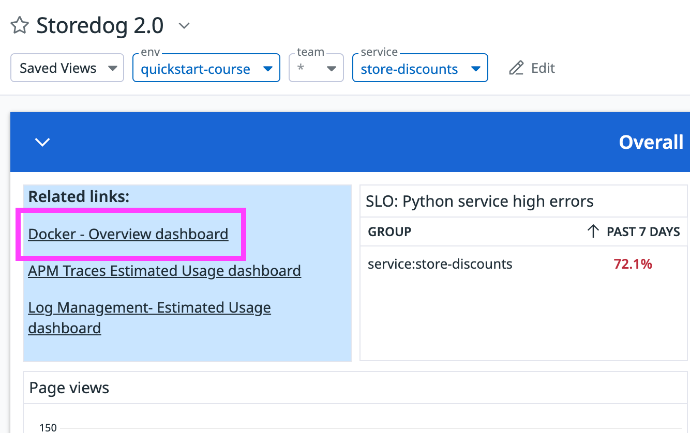
Bước 8: Duyệt dashboard Docker - Overview
Duyệt qua dashboard Docker - Overview. Cuộn ngang và dọc để xem toàn bộ nội dung.
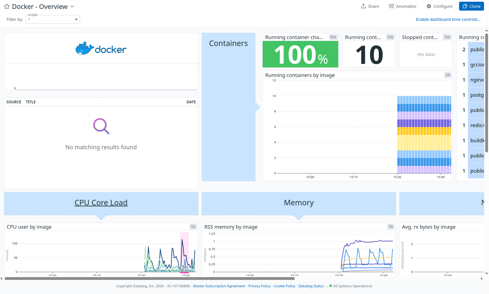
Bạn sẽ thấy các biểu đồ cho Containers, CPU Core Load, Memory và nhiều thông tin khác. (Phần Events bên dưới logo Docker sẽ trống.)
Thoạt nhìn, khó tìm được dữ liệu riêng cho dịch vụ store-discounts. Bạn có thể dùng bộ lọc dashboard để thu hẹp phạm vi.
Bước 9: Thu hẹp phạm vi bằng Scope
Bên dưới tiêu đề dashboard, nhấn menu scope → gõ service:store-discounts → chọn tuỳ chọn đó.
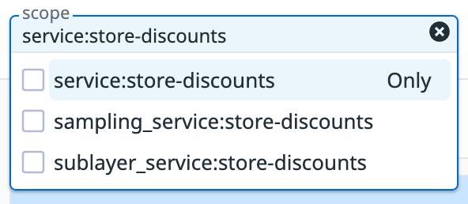
Lưu ý rằng bộ lọc và tuỳ chọn lọc ở dashboard này khác so với Storedog 2.0. Khi làm việc nhiều hơn với Dashboard, bạn sẽ thấy các cách tuỳ chỉnh khác nhau.
Sau khi đặt bộ lọc, các biểu đồ chỉ hiển thị dữ liệu cho dịch vụ store-discounts. Bạn có thể cần cuộn xuống để thấy biểu đồ CPU Core Load và Memory.
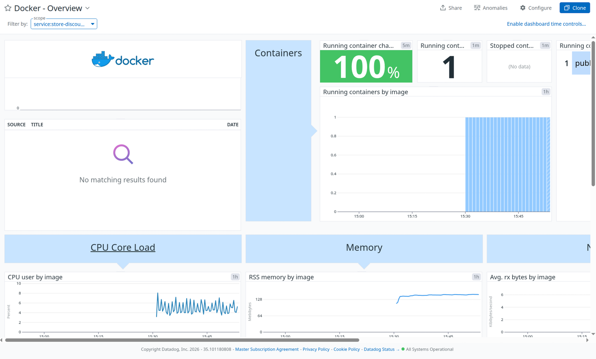
Kết luận: Nhìn chung, tình trạng container của store-discounts khá ổn! Container không ảnh hưởng đến hiệu suất của dịch vụ.
Bước 10: Thêm vào Favorites
Nhấn biểu tượng ngôi sao ⭐ bên cạnh tiêu đề dashboard để thêm vào yêu thích.
Bước 11: Kiểm tra Starred Dashboards
Trên menu chính, rê chuột vào Dashboards. Trong submenu, bạn sẽ thấy Docker - Overview và Storedog 2.0 được liệt kê trong mục Starred Dashboards & Notebooks mới.
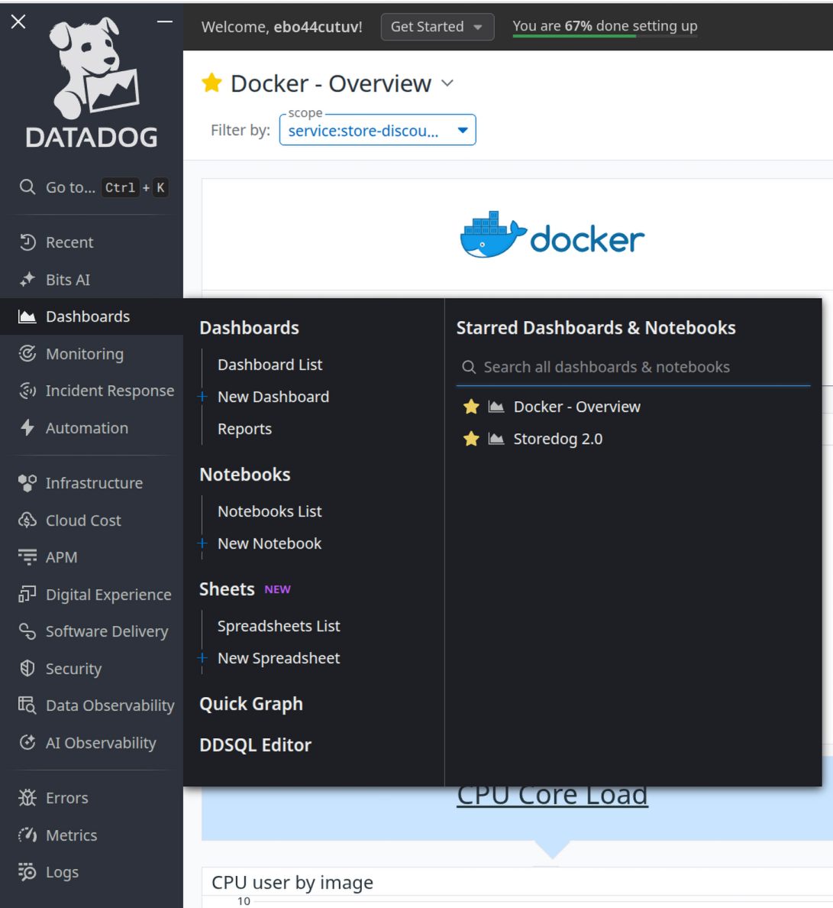
Bạn đã duyệt và đánh dấu yêu thích các dashboard. Đồng nghiệp cho biết bạn cũng có thể làm việc với dữ liệu log trong Datadog. Tiếp tục với phần Tìm kiếm Log bên dưới.
Phần 4: Tìm kiếm Log
Log Management trong Datadog tập hợp và xử lý tất cả log thành định dạng chuẩn hoá, có cấu trúc. Trong Logs, bạn có thể tìm kiếm và phân tích log để hiểu rõ hơn và khắc phục sự cố trong hệ thống. Bạn cũng có thể lưu lại các tìm kiếm để dùng sau.
Là thành viên team store-discounts, bạn muốn xem những log nào có sẵn cho dịch vụ này.
Lần trước bạn dùng menu chính để tìm Dashboard List. Lần này, bạn sẽ dùng công cụ tìm kiếm nhanh (Quick Navigation) của Datadog để đến Log Explorer.
Bước 1: Mở Quick Navigation
Trên menu chính, nhấn Go to… để mở công cụ tìm kiếm nhanh.
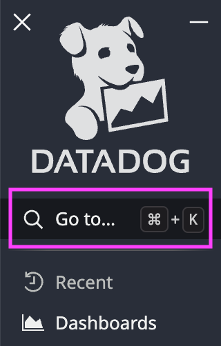
Bước 2: Duyệt danh sách
Duyệt qua cửa sổ vừa mở. Bạn sẽ thấy danh sách các sản phẩm và trang mà bạn có thể truy cập nhanh.
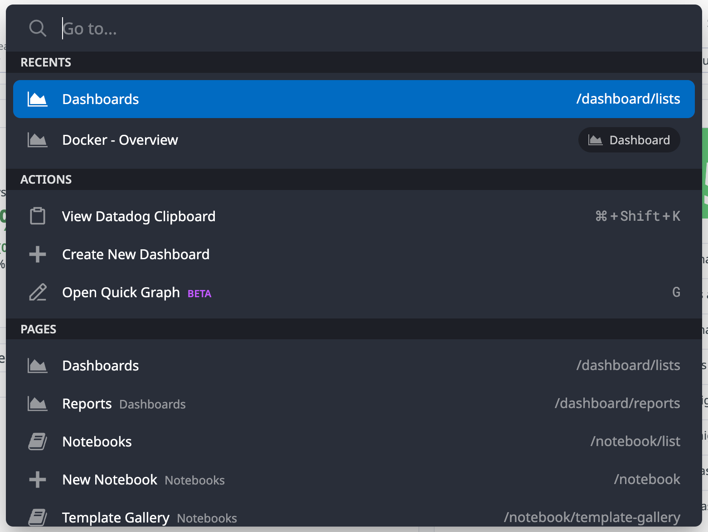
Bước 3: Tìm Logs
Gõ Logs vào ô tìm kiếm. Các tuỳ chọn hiện ra tương ứng với những gì bạn thấy trong submenu Logs ở menu chính.
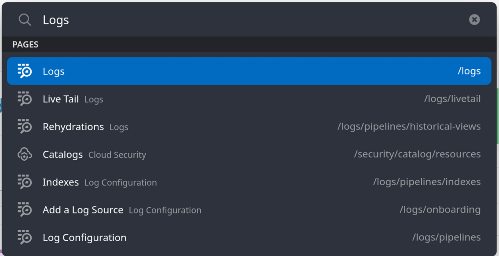
Bước 4: Truy cập Logs
Chọn Logs từ danh sách.
Lưu ý: Nếu bạn bị chuyển đến trang “Get started với logs” (vì đang dùng tài khoản mới), nhấn tab Server ở bên trái, sau đó nhấn Explore Your Logs ở góc dưới bên phải để kích hoạt giao diện Logs.
Bước 5: Duyệt danh sách log
Duyệt danh sách log. Bạn sẽ thấy log từ nhiều dịch vụ khác nhau.
- Phía trên ô tìm kiếm có bộ chọn thời gian (time picker) để chọn khoảng thời gian xem log.
- Bên trái danh sách có danh sách facets (bộ lọc) để lọc log.
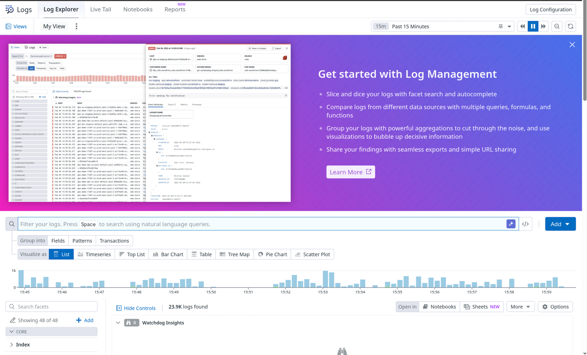
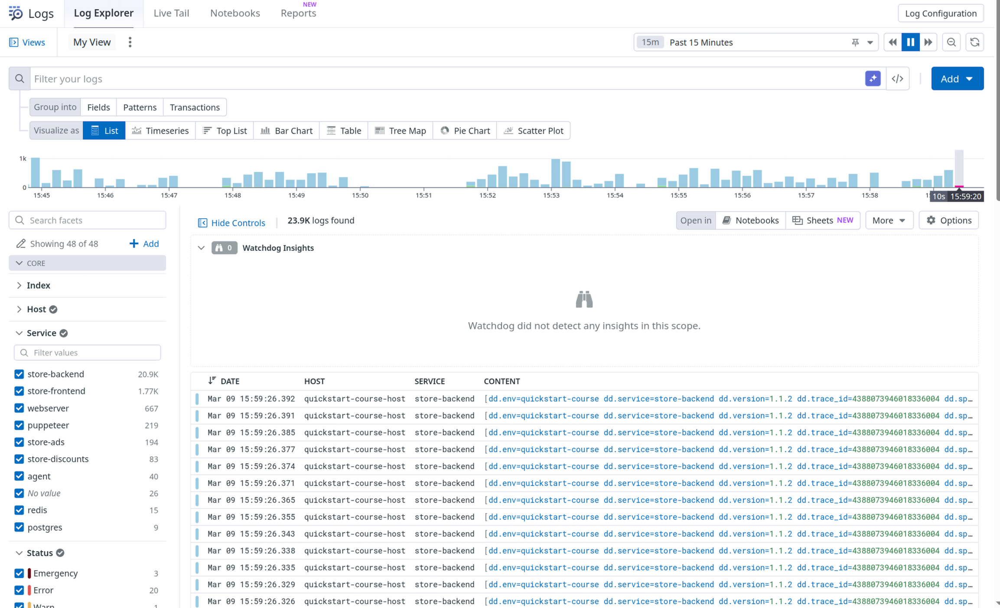
Bước 6: Lọc theo Service
Trong danh sách facets bên trái, ở mục Service, chọn store-discounts.
service:store-discounts sẽ xuất hiện trong ô tìm kiếm. Danh sách log giờ chỉ hiển thị log của dịch vụ này.
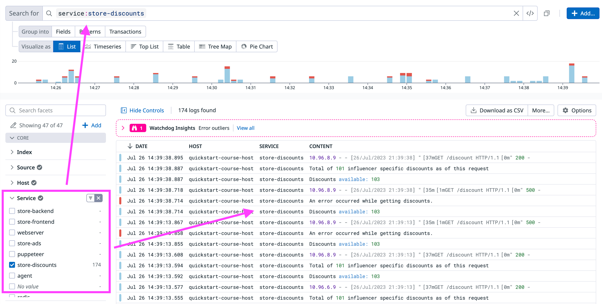
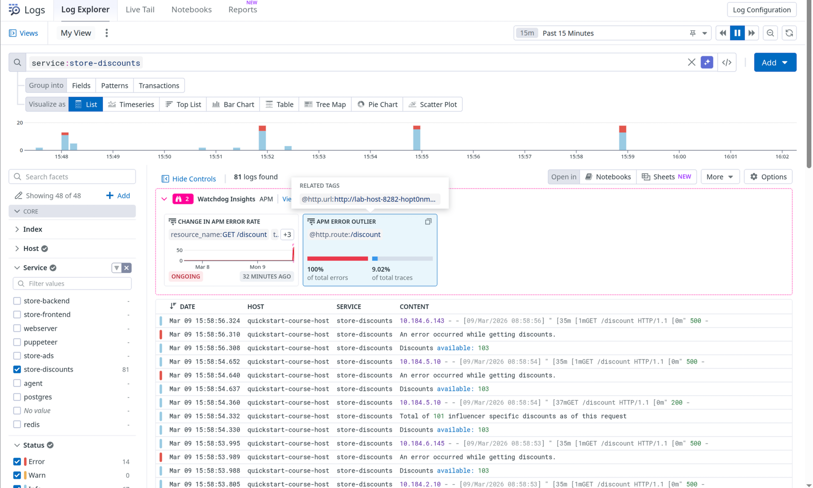
Bước 7: Xem chi tiết log
Nhấn vào một log có nội dung CONTENT là Discounts available: ###. Panel chi tiết log sẽ mở ra.
Phần trên của panel hiển thị tất cả tags gắn với log và nội dung log. Phía dưới có các tab Fields & Attributes, Trace, Metrics, và Processes – nhấn từng tab để xem dữ liệu liên quan.
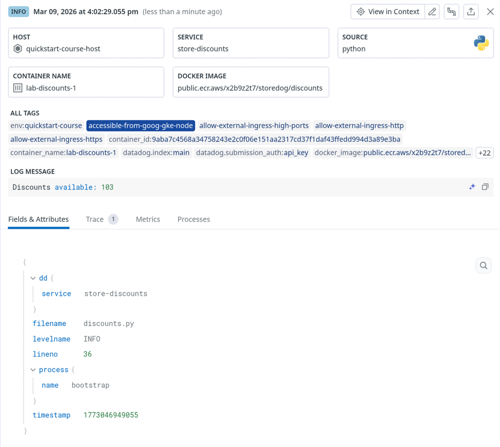
Nhấn X ở góc trên phải để đóng panel.
Bước 8: Lọc theo Status Error
Trong danh sách facets, ở mục Status, chọn Error.
status:error giờ cũng xuất hiện trong ô tìm kiếm.
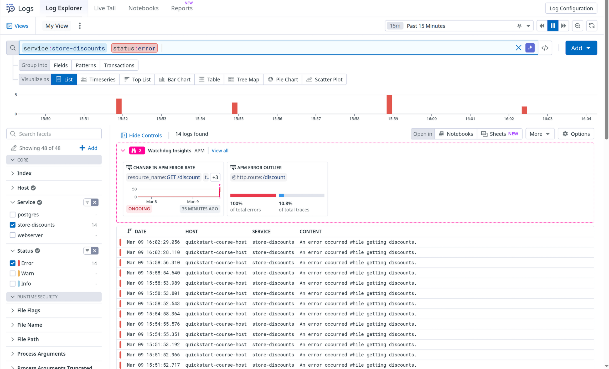
Bước 9: Xem chi tiết log lỗi
Nhấn vào một log có nội dung CONTENT là An error occurred while getting discounts.
Trạng thái hiển thị ở góc trên trái panel là ERROR.
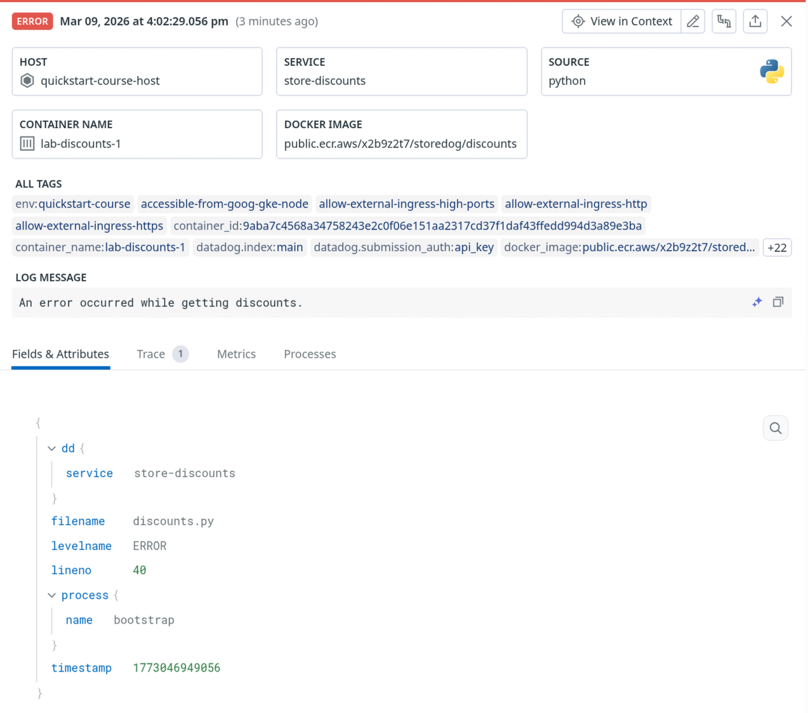
Bạn có thể dùng phím mũi tên lên/xuống trên bàn phím để xem nhanh chi tiết các log khác trong danh sách. Đóng panel khi xem xong.
Bước 10: Xóa bộ lọc
Trong ô tìm kiếm, rê chuột vào status:error và nhấn dấu X xuất hiện để xoá bộ lọc này.
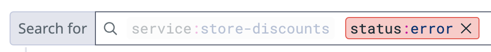
Bạn cũng có thể tạo các biểu đồ trực quan từ log. Ở đây, bạn muốn tạo biểu đồ hiển thị tỷ lệ phần trăm log lỗi.
Bước 11: Tạo biểu đồ Timeseries
Bên dưới ô tìm kiếm, thực hiện các thay đổi sau để xem biểu đồ timeseries theo trạng thái:
- Đặt Visualize as thành
Timeseries - Giữ nguyên Show Count of là
all logs - Đặt by thành
Status
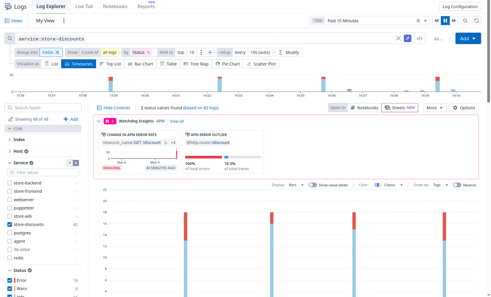
Rê chuột lên các thanh biểu đồ để xem số lượng. Bạn thấy được số đếm log nhưng không thấy phần trăm → cần thử kiểu biểu đồ khác.
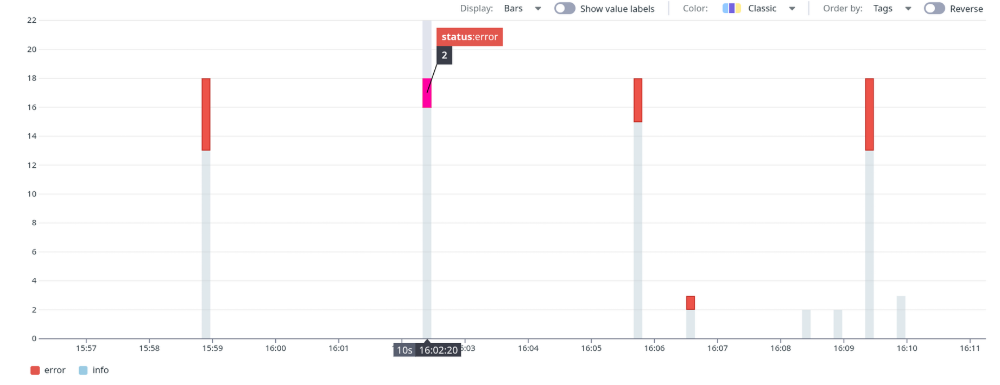
Bước 12: Chuyển sang Pie Chart
Đặt Visualize as thành Pie Chart.
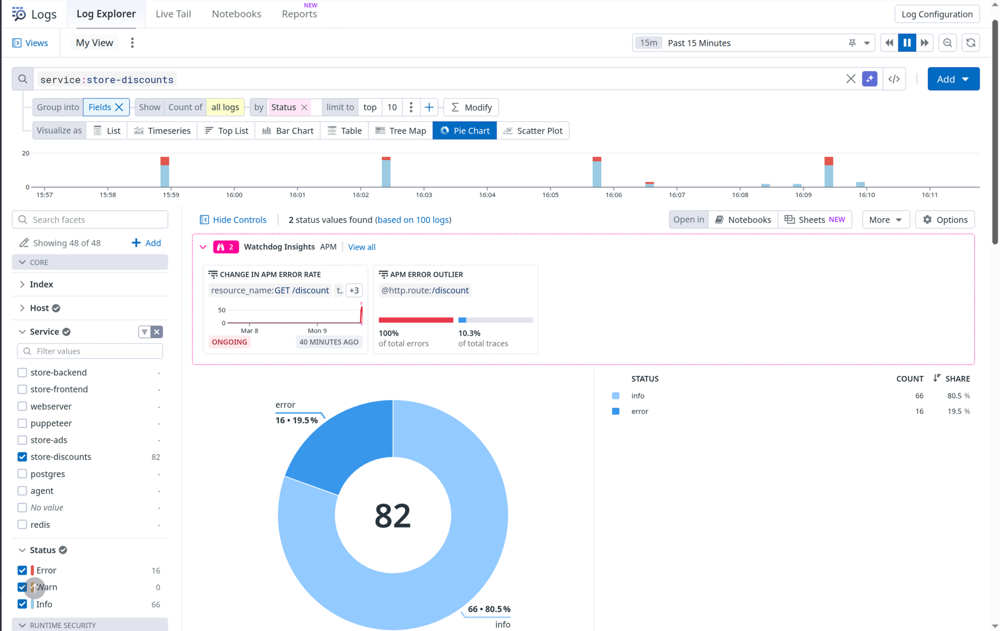
Biểu đồ tròn hiển thị số lượng và phần trăm log theo trạng thái trong khoảng thời gian đã chọn. Bạn có thể lưu biểu đồ này để dùng sau.
Bước 13: Mở Saved Views
Ở góc trên trái, phía trên ô tìm kiếm, nhấn Views để mở danh sách Saved Views.
Bạn sẽ thấy một số Saved Views OOTB mà Datadog đã cài sẵn dựa trên cấu hình log của Storedog.
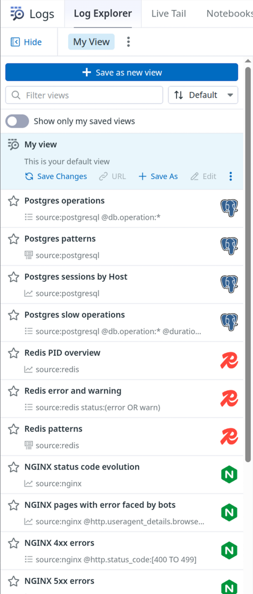
Bước 14: Lưu View mới
Ở đầu danh sách, nhấn Save as new view.
Bước 15: Đặt tên View
Trong ô New View, nhập tên sau:
store-discounts status percentages
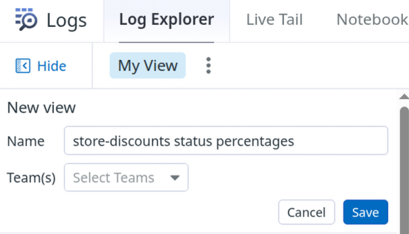
Bước 16: Lưu
Nhấn Save.
View mới sẽ xuất hiện ở đầu danh sách.
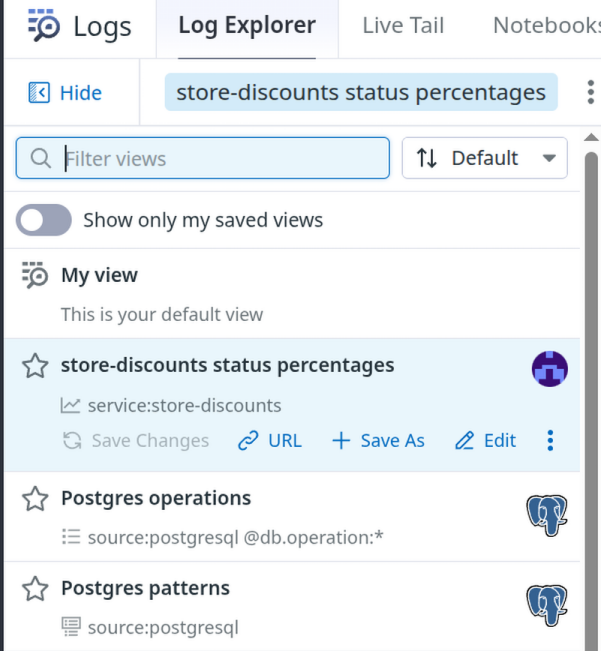
Bước 17: Đóng panel
Nhấn Hide phía trên danh sách Saved Views để đóng panel.
Bước 18: Đổi giao diện List
Log của store-discounts khá đơn giản. Để xem log phức tạp hơn, đặt Visualize as thành List.
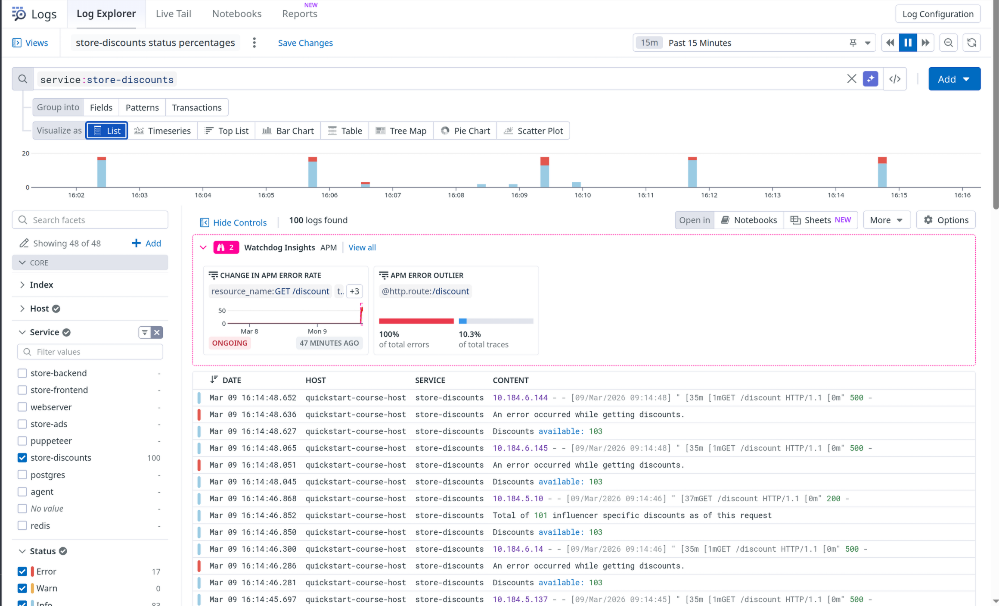
Bước 19: Đổi Service
Trong danh sách facets, ở mục Service, chọn webserver.
Bước 20: Phân tích log phức tạp
Nhấn vào một log bất kỳ. Xem nội dung log và duyệt qua Fields & Attributes.
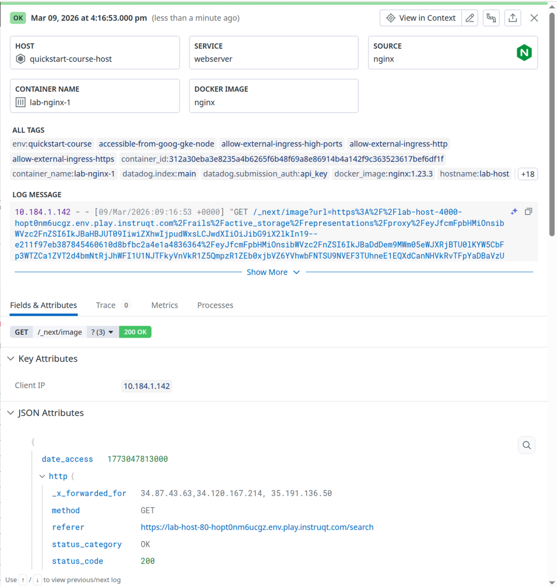
Nội dung log này phức tạp hơn nhiều so với log của store-discounts, nhưng Datadog vẫn trích xuất được tất cả chi tiết thành định dạng dễ đọc.
Lưu ý: Khi làm việc nhiều hơn với log, bạn sẽ học cách tạo facets từ event attributes để tìm kiếm, lọc và nhóm log bằng chính các chi tiết được trích xuất từ log.
Bước 21: Đóng panel
Đóng panel.
Khi duyệt log của store-discounts, bạn thấy chúng có dữ liệu trace từ Application Performance Monitoring (APM) được liên kết. Bạn muốn tìm hiểu thêm về dịch vụ và các dịch vụ mà nó tương tác. Software Catalog cung cấp tổng quan về những thông tin đó. Tiếp tục với phần Xem chi tiết dịch vụ bên dưới.
Phần 5: Xem chi tiết dịch vụ
Software Catalog cung cấp cái nhìn tổng quan về các dịch vụ trong hệ thống. Bạn có thể tìm thấy thông tin quan trọng về: ownership (ai sở hữu), độ tin cậy (reliability), hiệu suất ứng dụng, bảo mật, chi phí, và quy trình giao hàng (delivery).
Bước 1: Mở Software Catalog
Sử dụng menu chính hoặc công cụ Go to…, điều hướng đến Automation > Internal Developer Portal > Software Catalog.
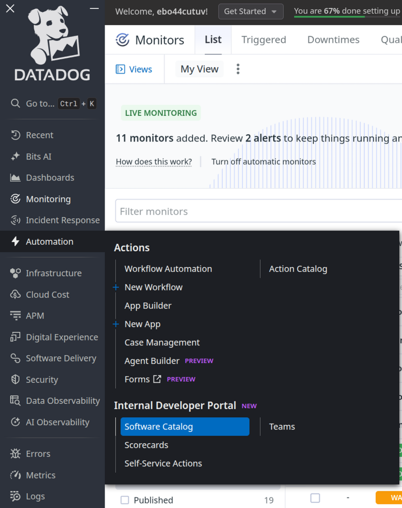
Trang mở ra ở Service List với tab Ownership. Bạn cũng sẽ thấy các tab Reliability, Performance, Security, Costs, và Delivery.
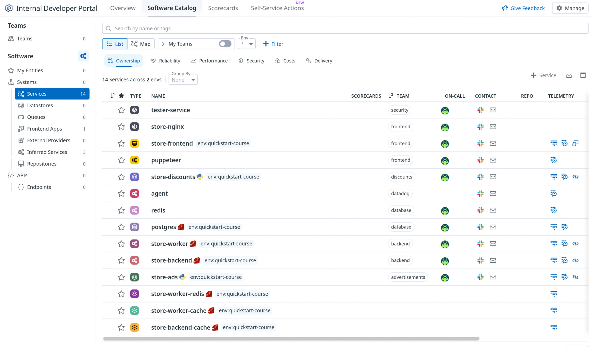
Bước 2: Lọc theo Environment
Phía trên danh sách dịch vụ, nhấn menu env:* → chọn env:quickstart-course để lọc danh sách chỉ hiển thị các dịch vụ của Storedog.
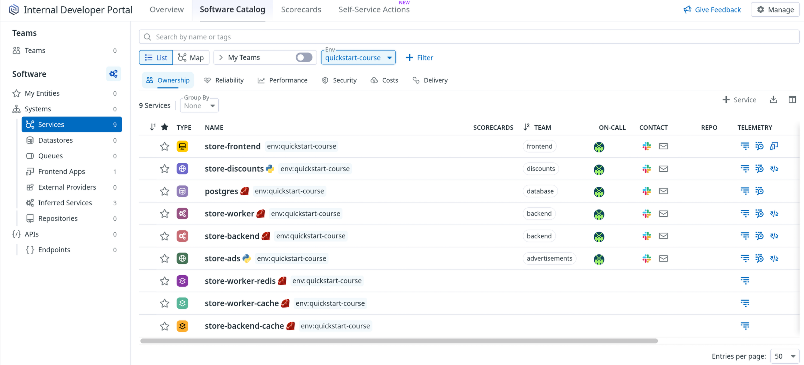
Bước 3: Xem tổng quan Telemetry
Với dịch vụ store-discounts, rê chuột lên các icon trong các cột để xem chi tiết. Các icon dưới mục Telemetry là lối tắt đến dữ liệu có sẵn của dịch vụ. Bạn có thể cần cuộn sang phải để thấy tất cả cột.
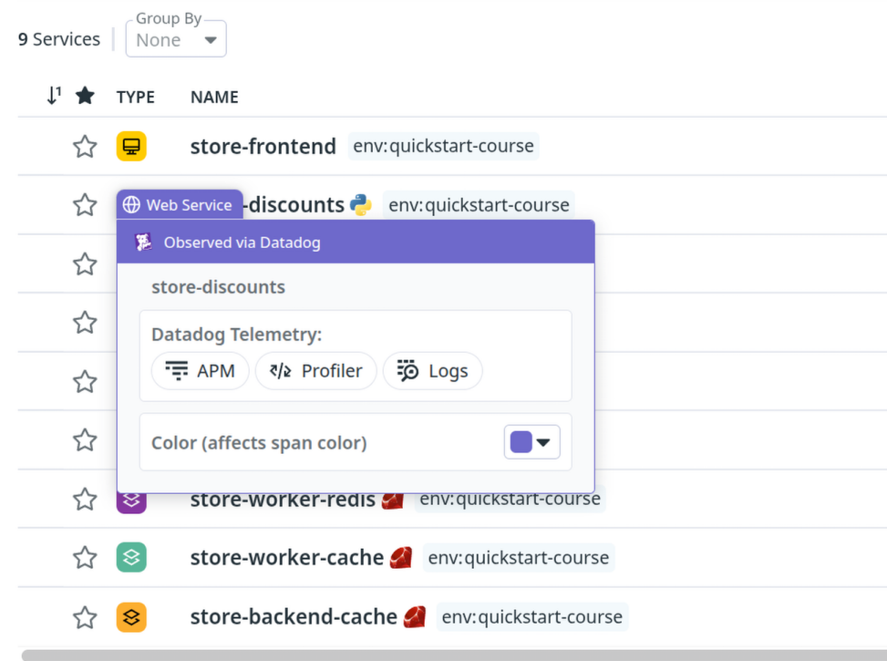
Bước 4: Mở tab Performance
Nhấn tab Performance phía trên danh sách dịch vụ.
Với mỗi dịch vụ, bạn sẽ thấy các metric APM chính: requests (số yêu cầu), latency (độ trễ), và error rate (tỷ lệ lỗi). Bạn cũng thấy số lượng và trạng thái monitor của mỗi dịch vụ.
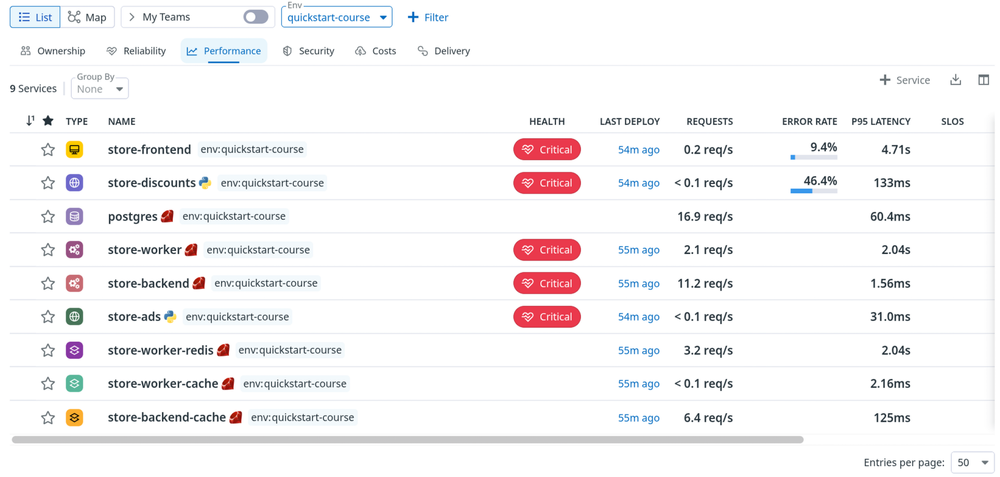
Lưu ý: Bạn có thể truy cập trực tiếp tab Performance của Software Catalog qua đường dẫn APM > Software Catalog trên menu chính.
Bước 5: Mở panel dịch vụ
Nhấn vào dịch vụ store-discounts. Panel sẽ mở ra ở tab Performance của chi tiết dịch vụ.
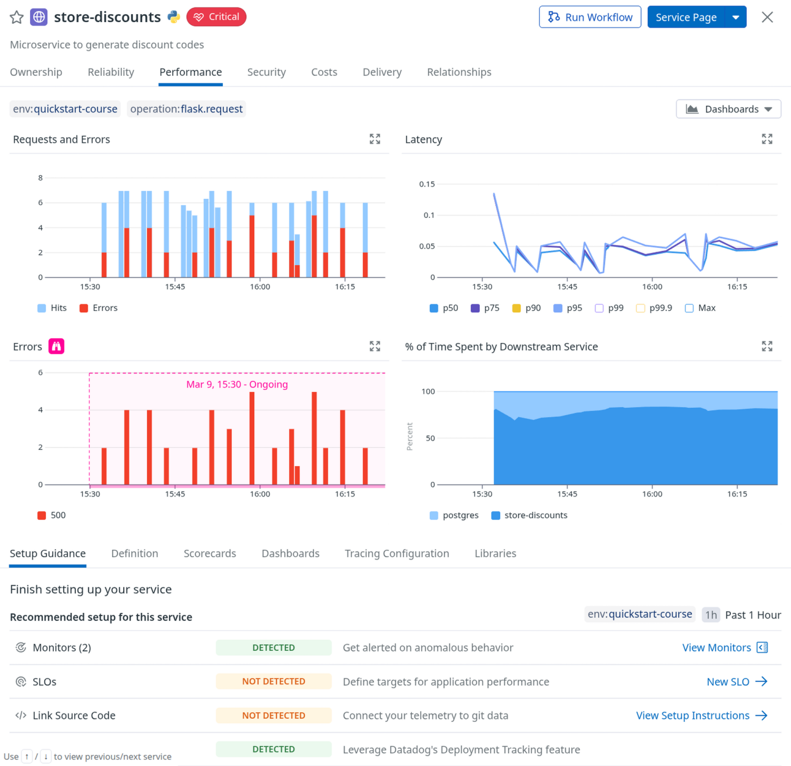
Tại đây bạn có thể xem nhanh các biểu đồ hiệu suất quan trọng. Ở góc trên phải panel, bạn có tuỳ chọn đi đến Service Page trong APM để xem chi tiết hơn.
Bước 6: Mở tab Ownership
Nhấn tab Ownership. Bạn sẽ thấy thông tin về dịch vụ: Documentation, Runbooks, Dashboards liên kết, cùng với Team, On-call, và Contacts.
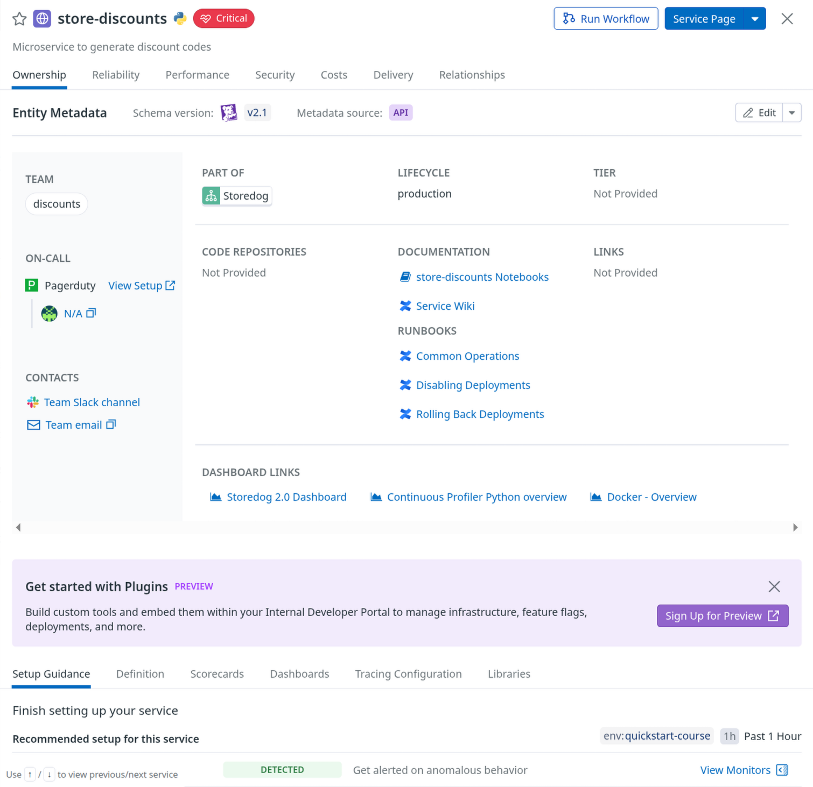
Bước 7: Xem thông tin thiết lập
Ở nửa dưới panel, bạn tìm thấy thêm thông tin về thiết lập dịch vụ, dashboard liên kết, dependency giữa các dịch vụ, và nhiều hơn nữa.
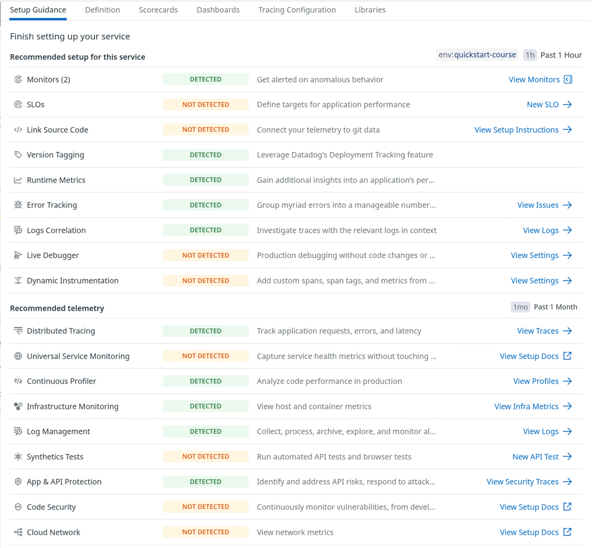
Bước 8: Điều hướng các trang liên quan
Ở góc trên phải panel, nhấn mũi tên cạnh Service Page. Menu mở ra hiển thị các trang liên quan mà bạn có thể điều hướng đến. Giữ menu này mở.
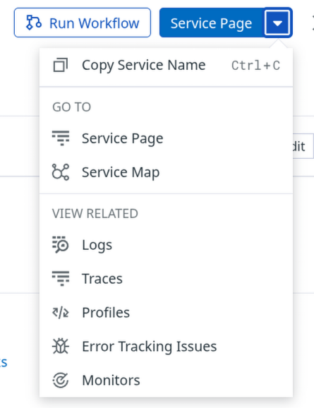
Software Catalog là nơi tập trung để xem tất cả dịch vụ mà team đang giám sát với Datadog. Giống như Dashboards và Logs, bạn cũng có thể điều hướng đến dữ liệu và tài sản liên quan (ví dụ: monitor) từ đây. Bây giờ, hãy thử khám phá monitor của dịch vụ store-discounts. Tiếp tục với phần Đọc hiểu Monitor bên dưới.
Phần 6: Đọc hiểu Monitor
Monitor là một cảnh báo tự động thông báo cho bạn và team khi một ngưỡng do người dùng định nghĩa bị vượt quá, hoặc khi trạng thái của một tài sản trong Datadog (như SLO hay synthetics test) thay đổi.
Ví dụ: một thành viên team store-discounts đã tạo APM Monitor để thông báo khi tỷ lệ lỗi của dịch vụ vượt ngưỡng cho phép.
Bước 1: Mở danh sách Monitor của dịch vụ
Trong menu Service Page, nhấn Monitors. Tab mới mở ra với danh sách Manage Monitors đã lọc sẵn theo service:store-discounts.
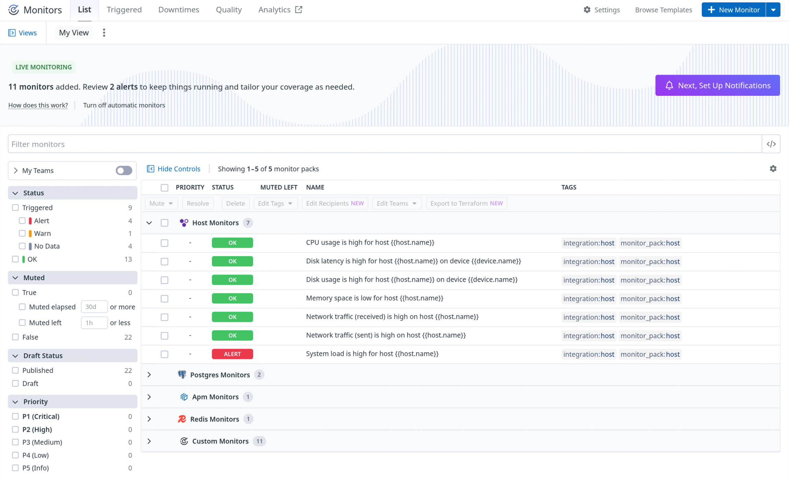
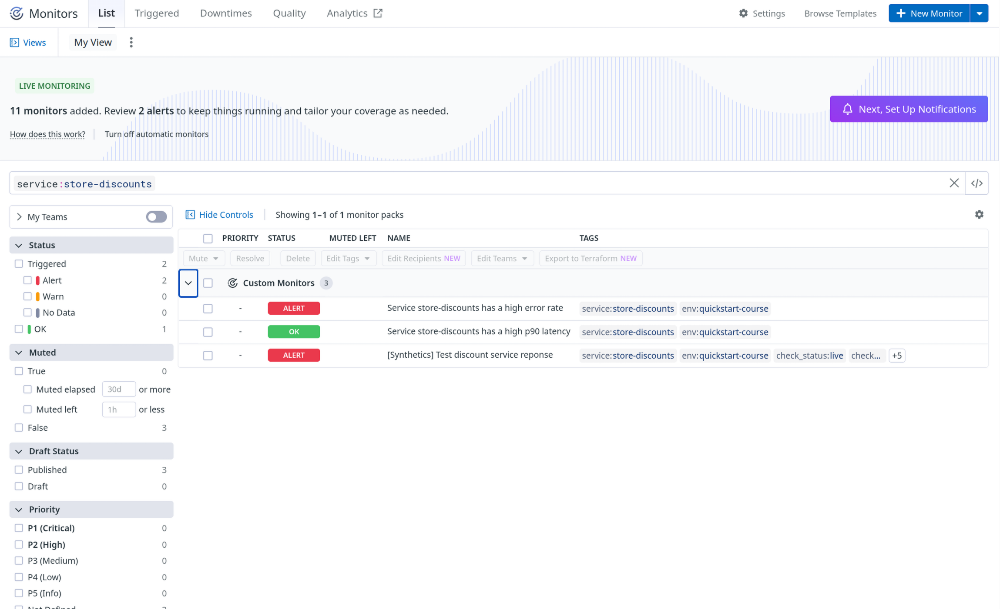
Chú ý rằng một số monitor có trạng thái ALERT hoặc WARN.
Bước 2: Xem trạng thái Monitor
Nhấn vào monitor tên Service store-discounts has a high error rate để mở trang trạng thái monitor.
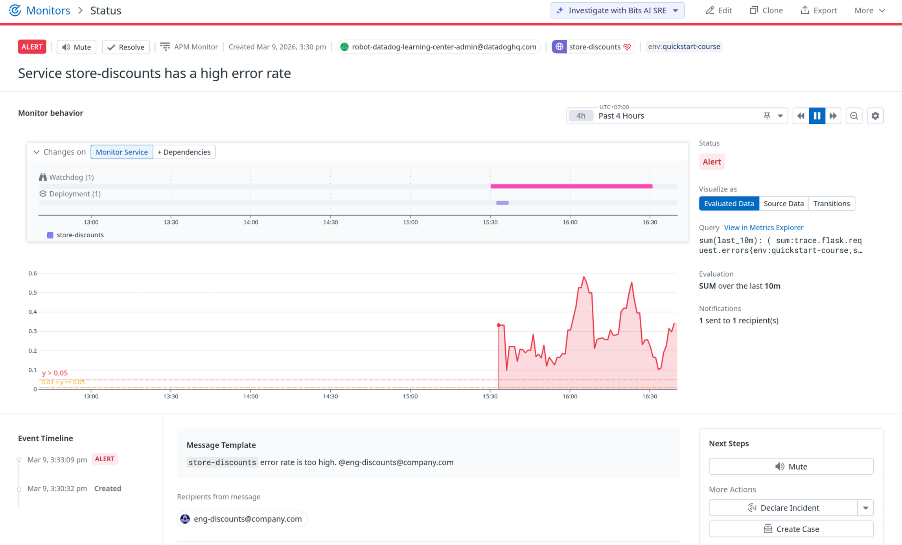
Trong phần header, bạn thấy: Monitor Status (trạng thái), Type (loại), Creation Date (ngày tạo), Author (người tạo), cùng Associated Teams và Services (nếu có).
Bên phải hiển thị chi tiết Query, Evaluation (đánh giá), và Notification Count (số lần thông báo) với danh sách người nhận. Rê chuột vào query để xem đầy đủ chi tiết.
Ý nghĩa query: “Lấy tổng trong 10 phút gần nhất, nếu tổng số lỗi chia cho tổng số request (tức tỷ lệ lỗi) lớn hơn 0.05, trạng thái là ALERT.”
Query này bao gồm tags env và service cho store-discounts, đảm bảo chỉ dữ liệu của dịch vụ này được theo dõi và cảnh báo.
Bước 3: Xem Event Details
Duyệt phần Event Details ở cuối trang Monitor Status.
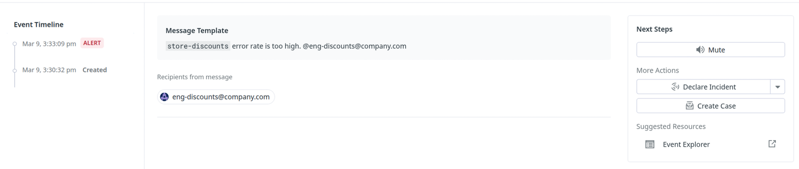
Bạn sẽ thấy Message Template (mẫu tin nhắn) và Recipients (người nhận).
Tin nhắn trong monitor này khá đơn giản, nhưng khi làm việc nhiều hơn, bạn sẽ học cách thêm biến, liên kết đến dashboard và runbook, gửi thông báo đến ứng dụng bên thứ ba như Slack và PagerDuty.
Mỗi khi trạng thái thay đổi, team sẽ nhận thông báo tại eng-discounts@company.com.
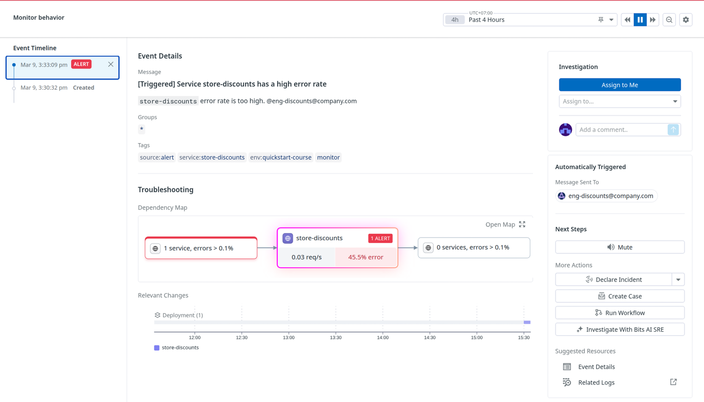
Bước 4: Xem Monitor Behavior
Duyệt chi tiết phần Monitor Behavior.
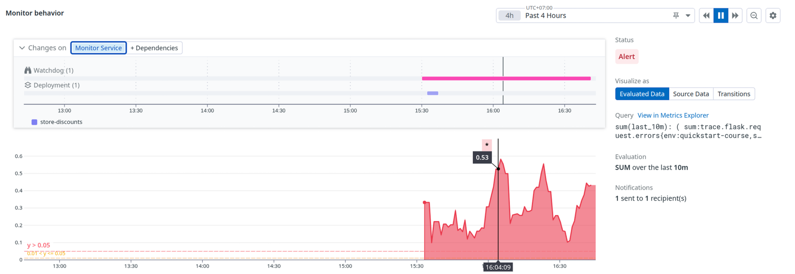
Bạn sẽ thấy biểu đồ thanh hiển thị trạng thái theo thời gian và hai biểu đồ timeseries cho metric đã tính toán từ query.
Là thành viên team store-discounts, giờ bạn đã biết nên bắt đầu tìm ở đâu trong Datadog để xem dữ liệu và thông tin quan trọng về dịch vụ store-discounts.
Phần 7: Tự thử nghiệm! (tuỳ chọn)
Hoạt động 1: Tìm và mở saved view của bạn trong Logs.
TIP
Đáp án:
Truy cập Logs > Search & Analytics > Explorer qua menu chính hoặc công cụ tìm kiếm nhanh. Nhấn Views ở góc trên trái. Chọn saved view của bạn trong danh sách.
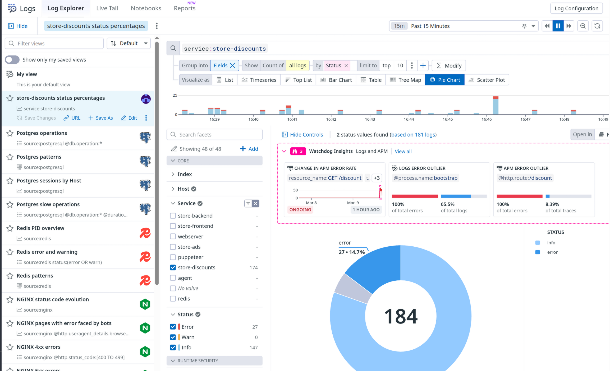
Hoạt động 2: Tìm trang Manage Monitors và tìm kiếm monitor của store-discounts.
TIP
Đáp án:
Truy cập Monitoring > Monitor List.
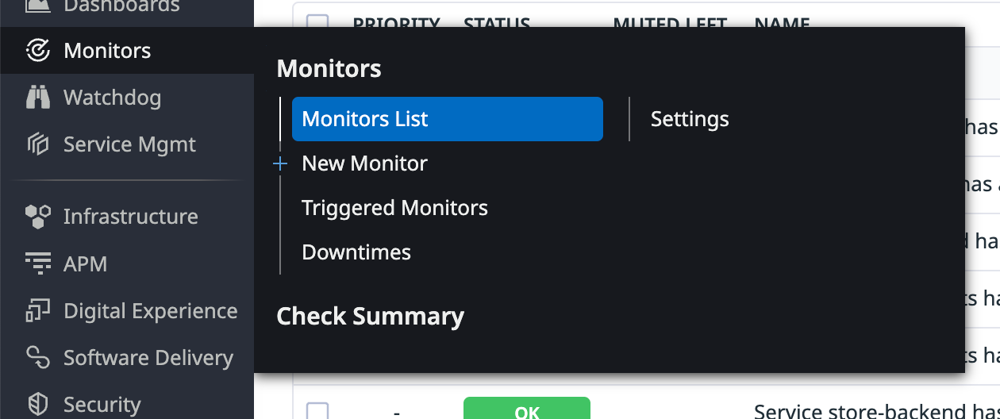
Trong danh sách facets, ở mục Service, chọnstore-discounts.
Tổng kết bài lab
Trong bài lab này, bạn đã thực hiện:
- ✅ Khám phá dashboard OOTB và dashboard tuỳ chỉnh từ Dashboard List
- ✅ Tìm kiếm và trực quan hoá dữ liệu log trong Logs
- ✅ Xem chi tiết dịch vụ trong Software Catalog
- ✅ Đọc hiểu monitor trong Manage Monitors
Bạn đã sử dụng các công cụ sau để tìm dữ liệu và tài sản:
- Menu chính (Main Navigation Menu)
- Công cụ tìm kiếm nhanh Go to…
- Các link và menu liên kết đến dữ liệu/tài sản trên các trang sản phẩm
Đây chỉ mới là bước khởi đầu hành trình với Datadog! Để tìm hiểu sâu hơn về Dashboards, Logs, Software Catalog và Monitors, hãy tham gia khoá học Datadog Foundation.